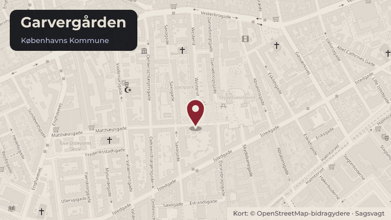

Besluttet 7. oktober, Socialudvalget
Virksomhedsoverdragelse af herberg og krisecenter Garvergården
Borgerrepræsentationen skal med denne indstilling godkende virksomhedsoverdragelsen af krisecenteret og herberget Garvergården, Dannebrogsgade 34-36, 1660 København V, til Københavns Kommune, herunder at Socialforvaltningen overtager driften af tilbuddet permanent pr. 1. januar 2027.
Steder i sagen: Garvergården · Dannebrogsgade

Kort fortalt
- Forslaget
- Godkende virksomhedsoverdragelsen af krisecenteret og herberget Garvergården til Københavns Kommune pr. 1. januar 2027, hvormed Socialforvaltningen overtager driften af tilbuddet fra samme dato.
- Hvem
- SocialudvalgetGår videre til Økonomiudvalget og Borgerrepræsentationen
- Hvornår
- Onsdag 7. oktober 2026
- Status
- Besluttet. Indstillingen blev anbefalet.Beslutningen er forkortet her. Læs hele beslutningen
- Næste skridt
- Socialforvaltningen vil arbejde videre med forberedelserne til virksomhedsoverdragelsen i den nedsatte arbejdsgruppe. Socialudvalget orienteres om processen, når der er afklaring på flere af sporene.
Afstemning 0 for, 0 imod (partier)
- For 0
- Imod 0
- Undlod 1
Undlod
Tallene viser antal partier, ikke stemmer.
Sagens vej
- 7. oktoberSocialudvalgetAnbefalet
- 3. novemberØkonomiudvalgetBesluttet
- SenereBorgerrepræsentationenAfventer
Læs hele sagen Kommunens egen tekst
Indstilling
Socialforvaltningen indstiller, at Socialudvalget over for Økonomiudvalget og Borgerrepræsentationen anbefaler,
• at godkende virksomhedsoverdragelsen af krisecenteret og herberget Garvergården til Københavns Kommune pr. 1. januar 2027, hvormed Socialforvaltningen overtager driften af tilbuddet fra samme dato.
Problemstilling
Bestyrelsen for krisecenteret og herberget Garvergården har den 14. august 2026 opsagt driftsoverenskomsten med Københavns Kommune og i den forbindelse anmodet Københavns Kommune om at overtage driften af Garvergården. Baggrunden herfor er, at forstanderen har sagt sin stilling op pr. 31. august 2026, og at størstedelen af bestyrelsen står over for at skulle udskiftes. Bestyrelsen vurderer samtidig, at det vil være vanskeligt at rekruttere nye bestyrelsesmedlemmer. Driftsoverenskomsten har en opsigelsesfrist på 10 måneder og er derfor opsagt til ophør den 30. juni 2027. Driftsoverenskomsten er senest fornyet i 2024.
Der arbejdes sammen med Garvegårdens bestyrelse på, at Socialforvaltningen overtager driften pr. 1. januar 2027, da en overtagelse ved årsskiftet vurderes at være mest hensigtsmæssig af administrative og regnskabsmæssige hensyn. Hvis forvaltningen ikke overtager driften af Garvergården, forventes tilbuddet at lukke.
Garvergården er et krisecenter efter servicelovens § 109 for voldsramte kvinder og mænd og deres børn samt et herberg efter § 110 for mennesker, der på grund af særlige sociale problemer ikke har eller ikke kan opholde sig i egen bolig. Garvergården har 14 pladser efter § 109 og 13 pladser efter § 110. Garvergården blev i 2015 godkendt af Socialtilsynet som selvejende institution med driftsoverenskomst med Københavns Kommune.
Ejendommen, som tilbuddet drives i, ejes af den almene boligorganisation FSB. Københavns Kommune lejer ejendommen, og fremlejer den til Garvergården som tredjemandslejemål. FSB er orienteret om den påtænkte proces for Socialforvaltningens overtagelse af driften. Socialforvaltningen finder det hensigtsmæssigt at fortsætte lejeforholdet.
Løsning
Forvaltningen foreslår, at Socialudvalget over for Økonomiudvalget og Borgerrepræsentationen anbefaler, at virksomhedsoverdragelsen af Garvergården til Københavns Kommune godkendes, herunder at Socialforvaltningen overtager driften pr. 1. januar 2027. Forvaltningen vurderer, at en kommunal overtagelse af driften vil medføre en større faglig sammenhæng med resten af forvaltningens tilbud og samtidig mindske risikoen for merudgifter til køb af eksterne pladser, hvis tilbuddet ellers lukker.
For at sikre driften af tilbuddet resten af 2026 har Socialforvaltningen fra den 1. september 2026 overtaget den midlertidige drift af tilbuddet frem til den permanente overtagelse den 1. januar 2027, herunder forstanderens opgaver og driftsansvaret.
Socialforvaltningen vil nedsætte en arbejdsgruppe, der frem mod overtagelsen skal arbejde med de forskellige spor af virksomhedsoverdragelsen, herunder den daglige drift, personale og ledelse, den juridiske del af virksomhedsoverdragelsen, de økonomiske konsekvenser, kommunikationsplan og digitaliseringsopgaver. Arbejdsgruppen ledes af en områdechef fra Socialforvaltningens Center for Midlertidige og Selvstændige Boformer.
Tilbuddets kvalitet
Socialtilsyn Hovedstaden gennemførte senest et anmeldt tilsynsbesøg den 19. juni 2025. I den endelige tilsynsrapport fra november 2025 vurderede Socialtilsynet samlet, at tilbuddet har den fornødne kvalitet og fortsat er godkendt. Socialtilsynet vurderede dog, at tilbuddet ikke havde den fornødne økonomiske kvalitet. De økonomiske forhold, som Socialtilsynet bemærkede, er efterfølgende håndteret. Der blev ikke givet påbud eller vilkår.
Konsekvenser for borgerne
Den foreslåede virksomhedsoverdragelse til kommunen vil ikke have betydning for borgerne på Garvergården. Der vil fortsat være den samme målgruppe og de samme indsatser på tilbuddet.
Konsekvenser for medarbejdere
Socialforvaltningen orienterede medarbejderne på tilbuddet den 12. august 2026 og sendte efterfølgende en skriftlig opsummering. Medarbejderne blev orienteret om, at Garvergården havde opsagt driftsoverenskomsten, og forventningen var, at Københavns Kommune ville overtage driften. Medarbejderne blev desuden orienteret om, at kommunens overtagelse af driften er omfattet af virksomhedsoverdragelsesloven, som fastslår, at medarbejderne har krav på at fortsætte ansættelsesforholdet på uændrede vilkår. Socialforvaltningen vil inddrage personalejura fra Koncernservice til at hjælpe med processen i forhold til medarbejdere.
Socialforvaltningen er opmærksom på, at virksomhedsoverdragelsen kan skabe usikkerhed blandt medarbejdere. Forvaltningen vil derfor have fokus på at mindske usikkerheden og fremme trygheden blandt medarbejderne under overdragelsen.
HovedMED drøftede sagen den 25. september 2026. Referatet fra HovedMED eftersendes til Socialudvalget i fredagsmailen.
Økonomi
Garvergården har et varigt årligt driftsbudget på ca. 11,2 mio. kr. En kommunal overtagelse af Garvergården forventes ikke at medføre ændringer i tilbuddets driftsøkonomi eller merudgifter i øvrigt for Socialforvaltningen.
Politisk handlerum
Hvis indstillingen ikke tiltrædes, forventes tilbuddet at lukke. Socialforvaltningen vil i så fald skulle finde alternative tilbud til de borgere, der opholder sig på Garvergården. Dette kan medføre merudgifter for forvaltningen.
Videre proces
Socialforvaltningen vil arbejde videre med forberedelserne til virksomhedsoverdragelsen i den nedsatte arbejdsgruppe. Socialudvalget orienteres om processen, når der er afklaring på flere af sporene. Indstillingen behandles i Økonomiudvalget den 3. november 2026 og i Borgerrepræsentationen den 26. november 2026.
FSB, som ejer ejendommen, orienteres om den forestående proces.
Beslutning
Der var afstemning om indstillingen.
Stemmer for: 10 (A, B, C, F og Ø)
Stemmer imod: 1 (I)
Undlod at stemme: 0
Indstillingen blev anbefalet.
Centerchef Eva Stokbro Jensen deltog under punktets behandling.
Kilde: Københavns Kommune, Socialudvalget, referat fra mødet onsdag 7. oktober 2026, punkt 7. Læs den originale sag hos kommunen.